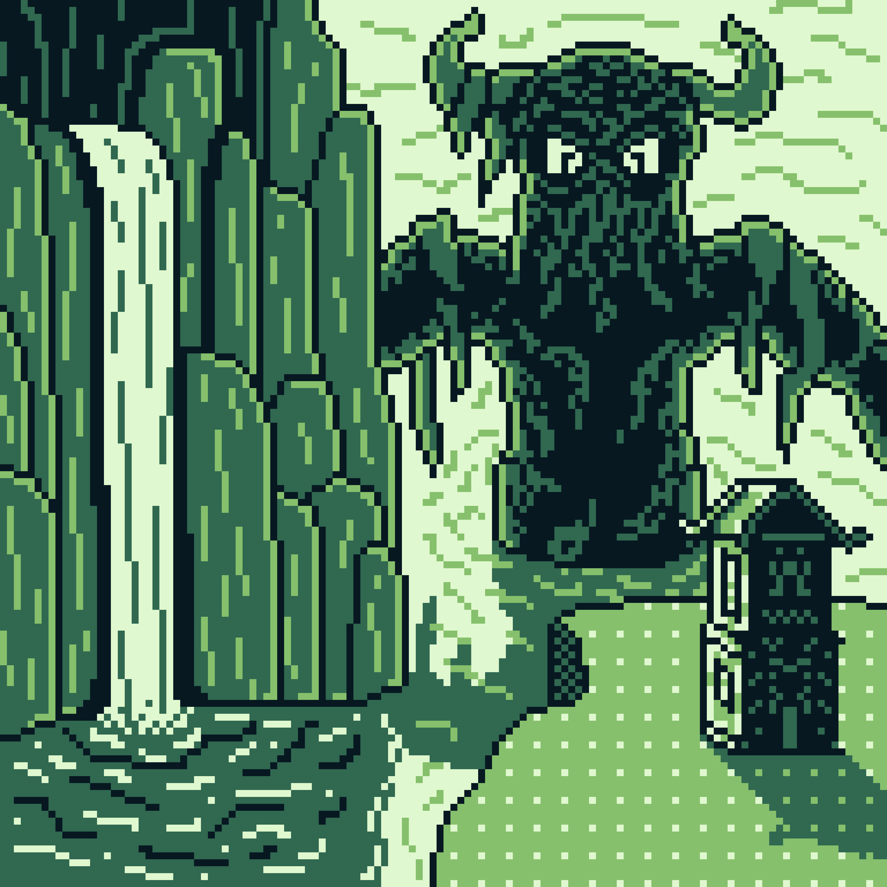

Celeste (Plataforma / Precisão)
Uma jornada emocionante sobre superação enquanto escala uma montanha cheia de desafios. Destaca-se pelos controles responsivos e pela trilha sonora envolvente.
Curadoria especial: do charme 16-bit às inovações independentes
Escolha uma categoria abaixo para saltar diretamente para as recomendações:
Produzidos por pequenas equipes ou criadores solo, os jogos indies trazem liberdade criativa e abordam temas profundos com jogabilidade precisa.

Uma jornada emocionante sobre superação enquanto escala uma montanha cheia de desafios. Destaca-se pelos controles responsivos e pela trilha sonora envolvente.
Explore um vasto reino subterrâneo em ruínas desenhado à mão, repleto de segredos, chefes desafiadores e narrativa ambiental rica.
Antes dos gráficos fotorrealistas, limitações técnicas obrigavam os estúdios a focar inteiramente em design de fases e diversão imediata.